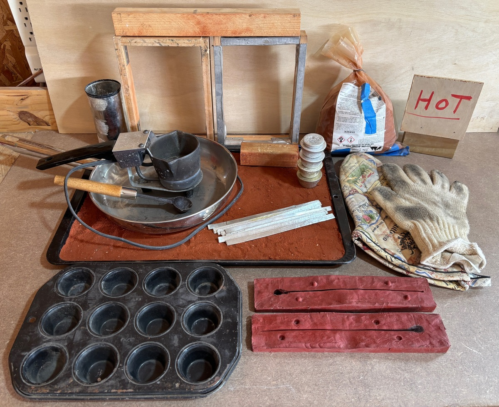
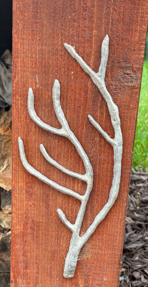
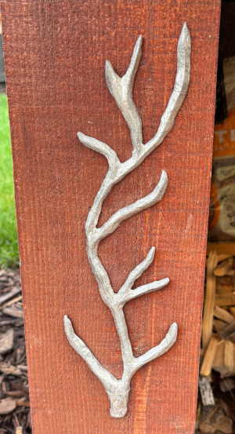

I have a hot-pot, some pewter, casting sand, and some related tooling.
I stay with the lead-free pewter ingots. Total weight: 2 lbs 4.9 oz.
Some is in little cylinders (from using the biscuit tin to capture extra melt from the hot pot), and some is in strips -- which I make from using the hi-temp silicone mold (the red thing in the lower right corner).
Some casting sand is in the cookie sheet, and the rest is in the plastic bag.
I sometimes spoon-out a shape within the cookie sheet, and then just pour into that (see the two photos of branches).
More info:
 